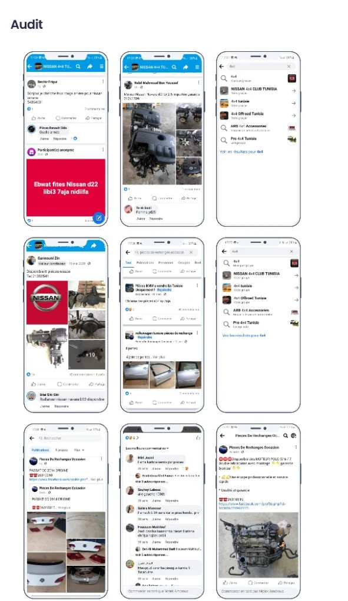
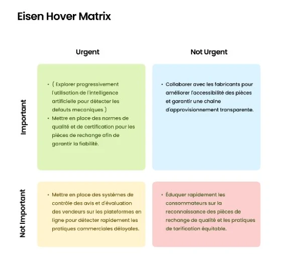
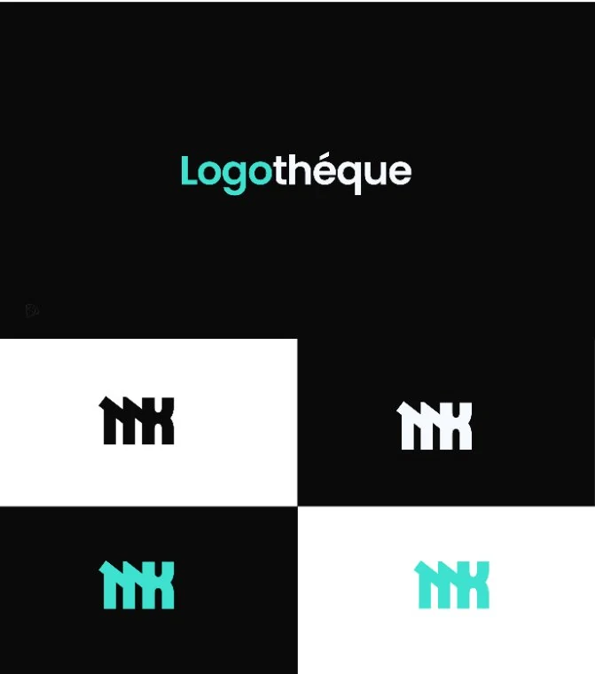
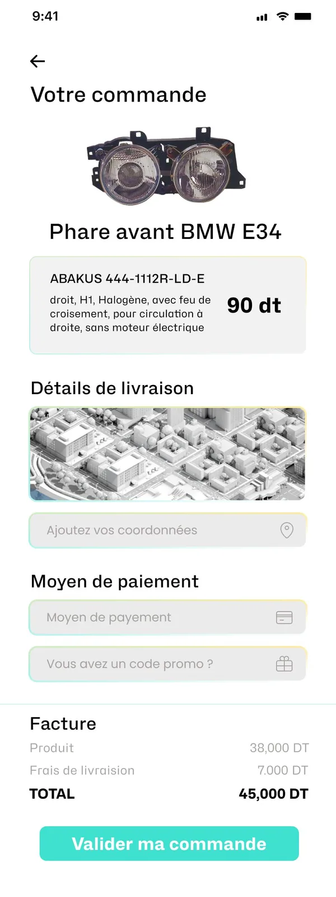
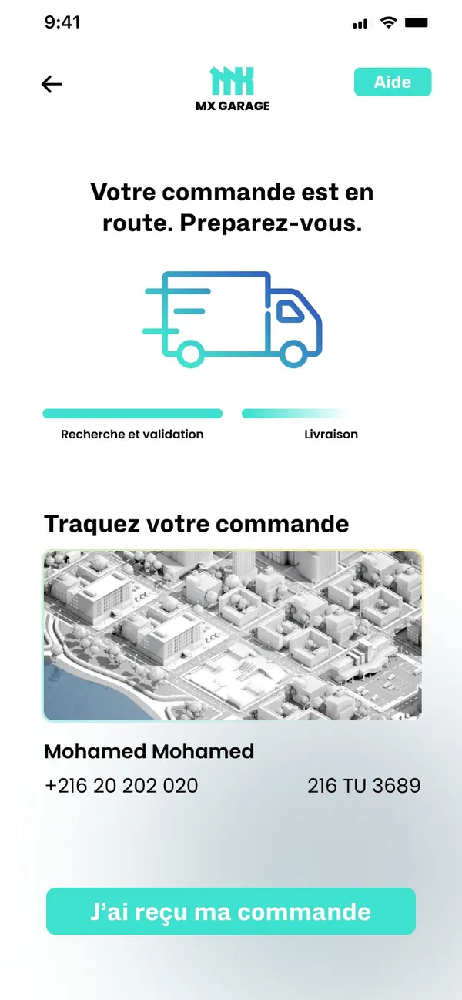
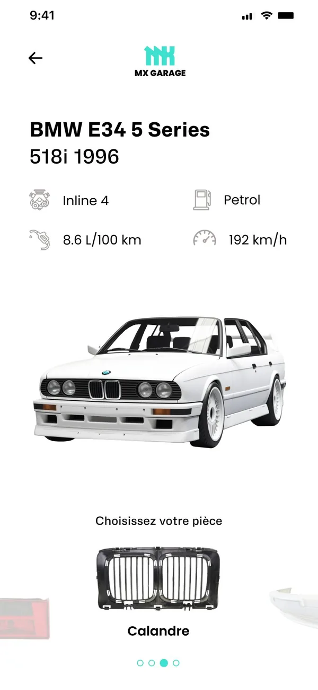
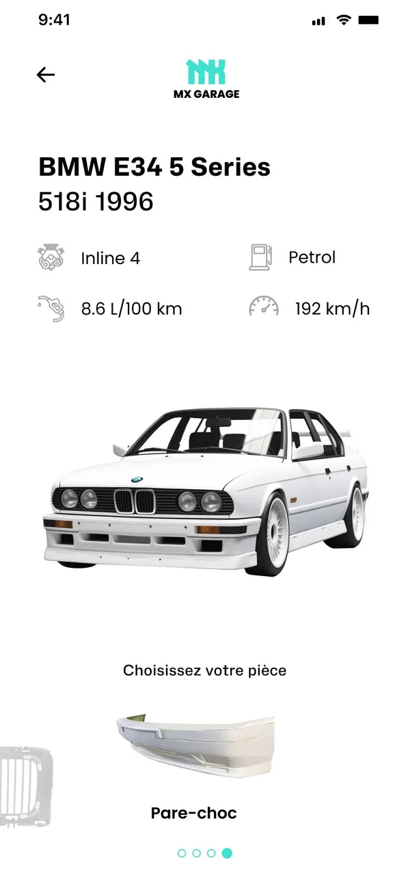
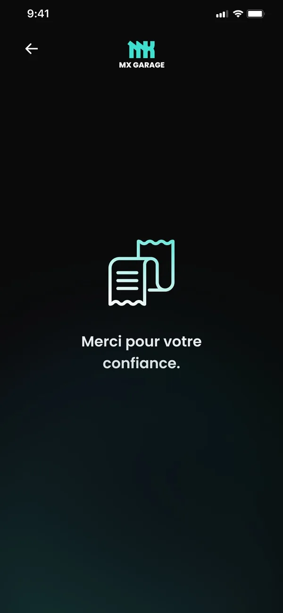

Buying a used part shouldn't
feel like a gamble
In Tunisia, most people get used car parts in one of two ways: through a mechanic, or by scrolling Facebook groups full of unstructured posts and phone numbers. Prices are opaque, availability is a guess, and there's no guarantee the part is genuine or in good condition.
I wasn't only the designer on this project — I was one of its users. I was preparing cars for drifting events, so every friction point in this system was one I had felt myself.
How might we make used car parts accessible, transparent and reliable — fighting price scams and messy online marketplaces — so buyers finally have a solution they can trust?
Where people buy parts today
I audited the channels people actually use. The answer was mostly Facebook: brand groups, "used parts" pages and buy/sell posts.
- No structure — parts are posted as free text and photos, so you can't search by car or part.
- No price reference — the price comes by phone, and it changes with who's asking.
- No guarantee — condition and authenticity depend entirely on trusting a stranger.

Most buyers aren't experts —
and depend on someone who is
I combined online research with interviews across the people involved in buying and fitting parts.
of car users go to a mechanic for repairs
of car connoisseurs are mechanics
of car enthusiasts don't own a vehicle themselves
Source: my online research and interviews for this project.
Four people, one marketplace
My users are mainly people who aren't car experts, but the platform also has to work for those who are.
The private owner
Wants a repair done at a fair price. Often doesn't know the name of the part and relies on a mechanic's word.
The mechanic
Sources parts for customers every day through personal contacts and phone calls.
The drifter / enthusiast
Hunts for specific parts for modified cars, often older models, and loses days finding them.
The first-time buyer
Has never bought a part and feels excluded from a market full of jargon and haggling.
What users need
- Easy access to parts.
- One shared marketplace to find the parts they need.
- Authentic used parts, actually available, at reasonable prices.
The gap: nobody owns
used parts
I benchmarked the two online platforms closest to the idea. Both sell new parts — neither solves trust in the used market, which is where most people buy.
AutoPart
- Quality and availability assured
- Search by car model and engine
Autos
- Quality and availability assured
- Keeps a database of vehicle registration numbers
MX Garage
- Find parts from your plate number
- Parts checked for condition and authenticity
- Transparent price before you order

A mark that feels
like the garage
I designed the MX Garage identity from scratch. The logo is a heavy, blocky monogram — like stamped metal. Teal sets it apart from the reds and yellows most automotive brands use, and reads as precise and modern.

Garage culture vs.
everyday clarity
My first direction was dark and industrial — black, oily, like a real workshop — to make enthusiasts and mechanics feel at home. But most of my users aren't enthusiasts. So I designed a light version of the same screens and tested both with users to see which felt easier to read and more trustworthy.
Direction A — Dark
Built for the culture: high contrast, workshop mood.


Direction B — Light
Built for everyone: softer, more neutral, same brand accent.



Both themes were designed end to end. Below, the browsing flow is shown in light and the order flow in dark. Long screens scroll inside the phone.
Enter your plate.
See your car. Pick the part.
Most buyers can't name the part they need, and part numbers mean nothing to them. So the search starts from something everyone knows: their Tunisian plate number. The app recognises the exact car — model, engine, fuel, year — and lets you swipe through its parts as pictures.



Honest about time,
clear about price
A used part has to be found and checked before it ships, so delivery isn't instant. Instead of hiding that, the flow shows it: a full price breakdown before you confirm, then a two-stage tracker — "Search & validation", then "Delivery" — with an estimated time and permission to close the app.


Designed as a system,
not a set of screens.
A marketplace for used parts only works if every link in the chain earns trust — from how the car is identified to how the part is checked and delivered. This is the system the screens sit on.
The thinking behind
the screens
Why search by plate number instead of part name?
Why show parts as a visual carousel on the car?
Why a two-stage tracker instead of a normal order status?
Why design two full themes?
Where could it go next?
What I learned
Identity vs. usability
A look that resonates with a community isn't automatically the clearest for everyone. Testing two directions made that trade-off visible instead of a matter of taste.
Being a user is a head start, not the answer
My drifting background gave me insights interviews alone wouldn't. It also gave me biases — research with other user types kept me honest.
Trust is designed in details
Price breakdowns, time estimates and condition checks do more for a marketplace than any visual style.
Systems early
Building the components alongside the first screens kept two themes and 20+ screens consistent.